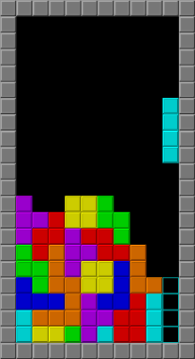

Тетрис (производное от «тетрамино» и «теннис») — компьютерная игра, первоначально изобретённая и разработанная советским программистом Алексеем Пажитновым. Игра была выпущена 6 июня 1984 года — в это время Пажитнов работал в Вычислительном центре Академии наук СССР.
